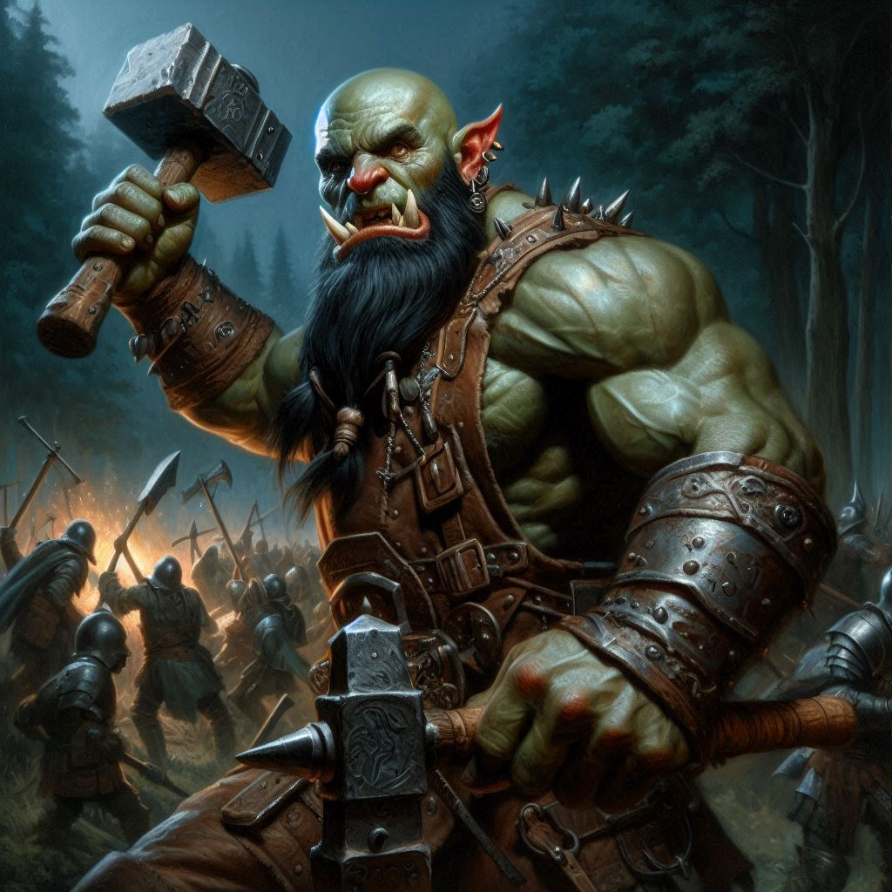
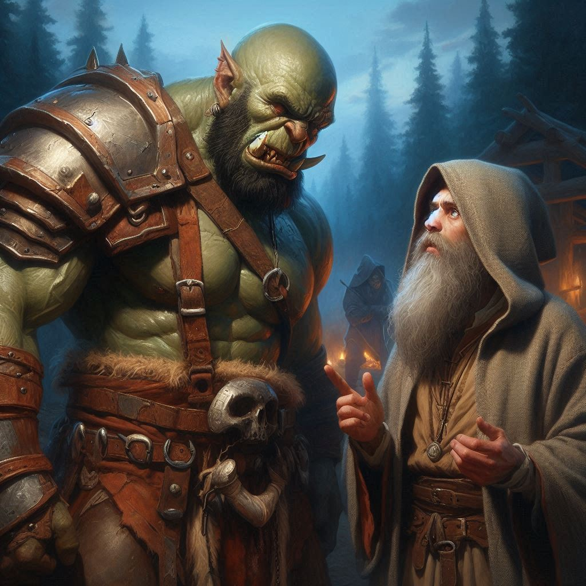

The Unwanted Rescue
You stand in the shadows of the mercenary camp, your heart pounding against your ribs as the firelight flickers across the tents. Jorsh stands a few feet away, his dark robes billowing in the breeze. His familiar face—once so dear to you—now wears an expression of hurt and defiance. He hasn’t changed much, but his eyes have grown darker, colder, as if the years away from Belladonna have stripped away the boy you once knew.
"I have a mandate to arrest you, Jorsh," you say, voice steady despite the storm of emotions swirling inside you. "After we rescue Onyx, if you're still here... I'll have no choice."
Jorsh narrows his eyes, his jaw clenches. “After everything we’ve been through, Kira? You’d really arrest me? You know why I’m doing this. I’m trying to stop Varis, to protect Belladonna. You should be helping me, not threatening me!”
Your grip tightens on your bow. “It’s not that simple. You chose this path. You chose revenge and dark magic. And now... now it’s too late for us.”
Jorsh’s hand twitches toward his staff, but he holds back. His voice softens, barely a whisper. “I never wanted this, Kira. I never wanted to leave you behind.” His gaze drifts to Elias, who watches from the shadows with that same unspoken loyalty. “You really think he’s better for you? You think he can protect you from what's coming?”
You glance at Elias, whose eyes flick between you and Jorsh with a mixture of worry and frustration. The air is thick with unspoken words, the tension building. Elias steps forward, but you raise a hand to stop him.
Baider, ever impatient, growls lowly beside you. “Enough of this! We don’t have time for your past grievances, Kira. Onyx is still out there, and if we don’t move now, Varis will complete his ritual and summon Yaldaboath.”
The name sends a chill down your spine, and you turn your focus back to the task at hand. "Fine, Jorsh. Leave if you want to keep your freedom. But if you stay and help us, I'll have no choice but to bring you in after we save Onyx. That’s the only offer you’re getting.”
Jorsh’s face hardens, his eyes searching yours one last time before he turns away, his cloak swishing against the dirt. “You’ve already made your choice, Kira. I’ll finish this my way.” Without another word, he strides into the darkness, heading toward Varis's stronghold.
Elias watches him go, his hand resting on the hilt of his sword. “You did the right thing. He’s too far gone.”
You nod, but the ache in your chest tells you otherwise. Pushing it aside, you turn to Baider. “Let’s move.”
The camp is still and silent as you and your companions slip between the tents, edging closer to the wooden cage where Onyx is being held. A few mercenaries sit around the fire, oblivious to your approach. Your heart pounds as you signal Elias and Baider to move in, the plan falling into place.
In a swift, coordinated effort, you take out the sentries. Baider smashes through their ranks with his hammer, while Elias slips through the shadows, silent and deadly. You rush toward Onyx’s cage, pulling free the rusted iron bars.
“Onyx, we’re here to get you out,” you whisper.
The old dwarf looks up at you with tired eyes, but instead of relief, there’s a strange mixture of annoyance and... disappointment?
“You shouldn’t have come,” he mutters, his voice raspy. “You’ve ruined everything.”
“What do you mean?” you ask, confused. “We’re here to save you.”
Onyx stands, his frail form more hunched than you remember, but his presence still commands respect. “The cosmic plan, Kira. You’ve disrupted it. Yaldaboath was meant to rise, and I was meant to sacrifice myself to stop him. But now… now you’ve altered the course. The ritual must be completed. The demon will rise, and there will be no one to stop him.”
You exchange a stunned glance with Elias, and Baider growls in frustration. “Typical Onyx. Always thinking he's got the answers, always thinking he knows better than anyone else!”
Onyx glares at Baider, their old rivalry flaring in the dim light. “You know nothing of what’s at stake, Baider. Yaldaboath’s power will consume everything if we don’t act now.”
Baider steps closer, fists clenched. “I know enough. I know you’re willing to throw your life away without thinking about the rest of us!”
Tension ripples through the air as the two old friends face off, but you don’t have time for their quarrel. You step between them, trying to focus. “Onyx, what do you mean? How do we stop Yaldaboath now?”
The old dwarf sighs, running a hand through his graying beard. “The only way to stop the demon is to complete the ritual Varis began, but in a way that will seal Yaldaboath back into the Shadow Realm. That’s why I needed to stay here.”
Elias shakes his head. “There’s no way we’re letting you sacrifice yourself.”
“Varis will be back here at any moment with his elite guards to take me to the Realm of Shadows,” Onyx says. “You are all in grave danger. You must leave now!”
“And if we refuse?” you ask, bristling with an odd combination of fear and frustration.
Onyx’s eyes flash with resolve. “You don’t have a choice. If we don’t, Belladonna—and everything else—will fall.”
Your heart races. This is bigger than any of you realized. But you can’t just let Onyx die for this.
Before you can respond, the sound of approaching footsteps catches your attention. You whirl around just as more mercenaries begin to pour into the camp, weapons drawn. There’s no time left.
Onyx holds up a rune stone and a small portal of light opens above his outstretched hand, swirling around the rune stone and reflecting in the old dwarf’s eyes.